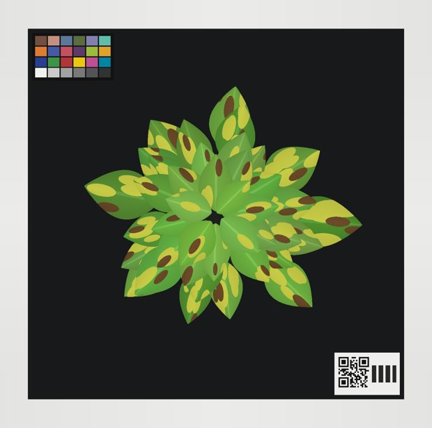
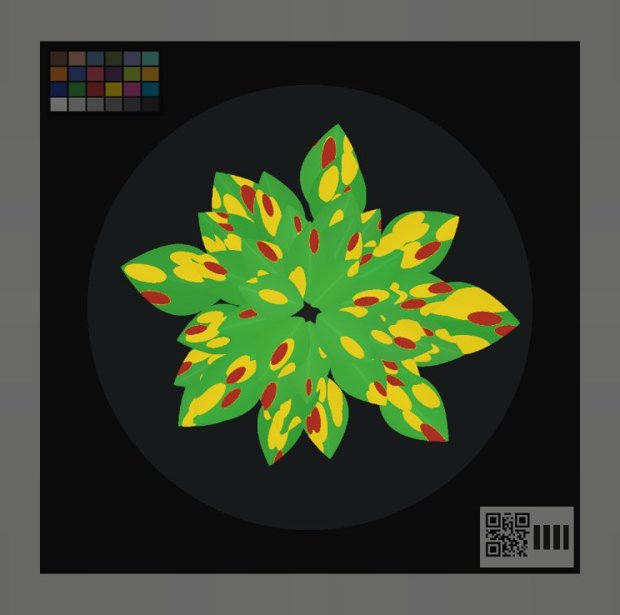

Zusammenfassung
Bei Versuchen nicht mehr von Hand auszählen: Foto machen, die App sagt sofort, wie stark der Befall ist – und am Ende steht alles sauber in einem Excel, das du als Versuchsdaten nutzt.
Topf wählen → Foto → „Befall 12 % · Note 2“ → nächster Topf.
Am Ende: ein Excel mit allen Werten deines Versuchs.
Alles im Hintergrund ist fertig programmiert und mit künstlichen Fotos getestet: Auswertung der Fotos, Handy-App, PC-Seite zum Einrichten („Werkstatt“), Druckseite für Topf-Karten, Pläne für die Fotobox. Läuft im Browser, ohne Installation und ohne Internet (Kapitel 3).
Die App kann heute mehr, als du brauchst. Ich schneide sie auf deinen Ablauf zu: Versuch anlegen, fotografieren, Excel holen – kein Dashboard, keine Listen. Die Rechnung bleibt gleich (Kapitel 2 und 4).
Fünf Schritte, geschätzt 3–5 Wochen je nach Lieferzeiten (Kapitel 5): 1 kurz entscheiden (15 Minuten) · 2 Fotobox besorgen – am einfachsten ein Lichtzelt kaufen · 3 Handy und App einrichten (1–2 Stunden) · 4 Probelauf mit 50 Töpfen · 5 erster echter Versuch.
Was ich jetzt von dir brauche
Dein OK zum Vereinfachen der App und 7 kurze Antworten (Kapitel 6). Du kannst einfach hier im Chat antworten. Das 15-Fragen-PDF vom Vormittag musst du nicht mehr durcharbeiten.
Ziel
So arbeitest du später bei jedem Versuch. Die Bilder sind Skizzen des Plans – gebaut wird nach deinem OK.
Je Versuch gibt es ein Excel mit allen Terminen. Es hat drei Blätter. So sieht es aus (Beispielzahlen):
Messwerte| Datum | Variante | Behandlung | Topf | Befall % | Note | grün % | gelb % | braun % | Foto | Bemerkung |
|---|---|---|---|---|---|---|---|---|---|---|
| 12.10.2026 | A | unbehandelt | A1 | 16,2 | 2 | 83,8 | 13,1 | 3,1 | 2026-10-12_A1.jpg | |
| 12.10.2026 | A | unbehandelt | A2 | 21,7 | 2 | 78,3 | 15,9 | 5,8 | 2026-10-12_A2.jpg | |
| 12.10.2026 | B | Mittel X | B1 | 8,4 | 1 | 91,6 | 7,0 | 1,4 | 2026-10-12_B1.jpg | Blätter nass |
| 12.10.2026 | C | Mittel Y | C1 | 3,2 | 1 | 96,8 | 2,9 | 0,3 | 2026-10-12_C1.jpg | |
| … eine Zeile je Foto, alle Termine untereinander | ||||||||||
| Datum | Variante | Behandlung | Töpfe | Befall % (Mittel) | ± Streuung | Note (Mittel) |
|---|---|---|---|---|---|---|
| 12.10.2026 | A | unbehandelt | 10 | 18,3 | 4,1 | 2,3 |
| 12.10.2026 | B | Mittel X | 10 | 9,1 | 2,6 | 1,5 |
| 12.10.2026 | C | Mittel Y | 10 | 4,0 | 1,9 | 0,9 |
| 19.10.2026 | A | unbehandelt | 10 | 27,5 | 5,3 | 2,9 |
| … je Termin und Variante eine Zeile – fertig für Diagramme und Statistik | ||||||
Versuch Name, Start, Sorte, Varianten, Töpfe, Notenskala und die Programmversion – damit man auch in einem Jahr noch weiß, wie gemessen wurde.
Die Fotos sicherst du mit einem Tipp als ZIP-Datei. Sie heißen dann sprechend, z. B. 2026-10-12_A4.jpg.
Für zwischendurch: „Schnell messen“, Foto, Ergebnis. Nichts wird gespeichert – außer du willst es.
Ist-Stand
Hinter der App stehen ein paar Teile. Im Alltag brauchst du davon nur die App – und die Fotobox.
| Teil | Wofür | Im Alltag? |
|---|---|---|
| Handy-App | Versuch, Fotos, Ergebnis, Excel. Läuft im Browser, wird wie eine App aufs Handy gelegt, braucht kein Internet. | ja |
| Fotobox | Gleiches Licht, gleicher Abstand, dunkler Hintergrund für jedes Foto. Ohne sie wären die Zahlen nicht vergleichbar. | ja |
| Farbkarte | Liegt immer mit im Bild. Die App gleicht damit Farbschwankungen aus. | ja (liegt in der Box) |
| Werkstatt (PC) | Einmal beim Einrichten: Probelauf prüfen, Notengrenzen einstellen. Gibt es auch als einzelne Datei per Doppelklick. | nein |
| Druckseite | Topf-Karten mit großer Nummer und QR-Code, Maßstab-Karte. | ab und zu |
| 3D-Druckteile | Handyhalter, Abdeckscheibe für die Erde, Halter für Farbkarte und Topf-Karte (Ordner fotobox/). | einmal |
| GitHub | Hier liegt alles. Von hier kommt die App per Link aufs Handy, und hier werden Änderungen automatisch geprüft. | nein |
| Leitfaden (95 Seiten) | Nachschlagewerk mit allen Details und Hintergründen. | bei Bedarf |


Abb. 3.1: Links das Foto aus der Box, rechts das Kontrollbild der App (künstliches Testfoto): grün = gesund, gelb = Aufhellung, rot = braun. Ergebnis: Befall 36 %, Note 3.
| Geprüft | Noch nicht geprüft |
|---|---|
| Die Rechnung stimmt: 65 automatische Tests, bei jeder Änderung neu. Künstliche Fotos mit bekanntem Befall: wahr 11,5 % → App 11,9 %; wahr 35,2 % → App 36,1 %. App und Werkstatt laufen in Chrome, Edge und Safari, auch offline und als Datei. |
Echte Basilikumpflanzen, eure Fotobox, euer Handy. Ob die Note zu euren Augen passt. → Das zeigt der Probelauf (Kapitel 5.4). |
Und die früheren Unterlagen?
Der Leitfaden bleibt ein Nachschlagewerk. Der Weg in diesem PDF ist die vereinfachte Fassung seiner Etappen 0 bis 6. Das PDF „Stand und Fragen“ ist hiermit ersetzt: Statt 15 Fragen brauche ich nur noch 7 Antworten.
Umbau
Die Rechnung bleibt, die Bedienung wird einfach. Nach deinem OK baue ich das in ein bis zwei Arbeitssitzungen um und teste es wieder automatisch.
| Heute | Künftig |
|---|---|
| Start mit Sitzungen; Sätze, Sorten, Behandlungen, Tische als Listen | Start mit deinen Versuchen und einem großen Knopf |
| Topf-Nummer eintippen oder aus dem QR-Code | „Was wird fotografiert?“ – der nächste Topf ist vorgeschlagen, der QR-Code prüft mit |
| Ergebnisseite mit vielen Zahlen und Feldern | Groß Befall % und Note, dann „Weiter“; Details nur bei Bedarf |
| Ein Excel je Sitzung | Ein Excel je Versuch über alle Termine, mit Übersicht je Variante und Termin |
| Fotos heißen BOX_20261012_101532.jpg | Fotos heißen 2026-10-12_A4.jpg |
| Übersicht, Verlauf, AUDPC und Regelkarte in der App | Mittelwerte im Excel; die Qualitätskontrolle bleibt versteckt in den Einstellungen |
| Pilot: Noten auf Papier und in einer eigenen Excel | Probelauf-Modus: Noten direkt in der App eintippen, die App zeigt ihr Ergebnis erst danach |
| Einrichten mit vielen Reglern | Einmal am Handy: Farbkarte und Topfkreis antippen – danach Ruhe |
Was bleibt: der Rechenweg, die Farbkarte, Excel und ZIP, „läuft ohne Internet“ und die Sicherheitsabfrage, bevor etwas gelöscht wird. Die Werkstatt bleibt für den Probelauf.
Fahrplan
Fünf Schritte. Die meisten sind kurz.
7 Antworten in Kapitel 6. Wo du nichts schreibst, nehme ich meinen Vorschlag.
Die Box sorgt dafür, dass jedes Foto unter gleichen Bedingungen entsteht – nur dann sind die Prozentwerte zwischen Varianten und Terminen vergleichbar. Der einfachste Weg ist ein fertiges, faltbares Fotostudio-Lichtzelt mit eingebauten LEDs.
| Lichtzelt kaufen Vorschlag | Selbst bauen (Leitfaden Kapitel 4) | |
|---|---|---|
| Aufwand | auspacken, aufstellen: ca. 1–2 Stunden | Zuschnitt, Druckteile, Zusammenbau: mehrere Tage |
| Kosten (grob) | ca. 50–150 € plus Farbkarte (Preise prüfen) | ca. 150–250 € plus Farbkarte |
| Worauf achten | Würfel ab ca. 70–80 cm (große Pflanzen: 80 cm), Öffnung oben für das Handy, LEDs mit CRI/Ra ≥ 90, Dimmer immer auf voll | alles nach Maß |
| Druckteile | nur Handyhalter über der Öffnung und Abdeckscheibe – oder Brett mit Loch und schwarzer Moosgummi | alle 8 Teile |
Dazu brauchst du in beiden Fällen: die Farbkarte (Calibrite ColorChecker Classic Mini), einen matt schwarzen Boden (z. B. Moosgummi) und eine Markierung, wo der Topf steht (Klebeband-Kreuz oder Zentrierring). Schick mir Modell und Maße des Lichtzelts – dann passe ich Handyhalter und Abdeckscheibe daran an.
Bevor du dich auf die Zahlen verlässt, prüfen wir einmal, ob die App zu euren Augen passt.
Der Probelauf ist kleiner als der Pilot im Leitfaden (100–200 Töpfe). Für den Start reicht das; wenn die Ergebnisse knapp sind, nehmen wir mehr Töpfe dazu.
Versuch anlegen, an jedem Termin fotografieren, Excel holen. Tipps: immer eine unbehandelte Kontrolle mitführen, Pflanzen trocken fotografieren, Klappe zu.
| Schritt | Du | Claude |
|---|---|---|
| 1 Entscheiden | 7 Antworten (Kapitel 6) | trägt sie ein |
| 2 Fotobox | Lichtzelt und Farbkarte bestellen, aufstellen | App vereinfachen; Handyhalter ans Zelt anpassen |
| 3 Handy + App | App installieren, Kamera-Test, Farbkarte antippen | hilft bei Fragen, wertet den Kamera-Test aus |
| 4 Probelauf | 50 Töpfe fotografieren und benoten, Excel schicken | auswerten, Notengrenzen einstellen |
| 5 Versuch | Versuch anlegen, fotografieren, Excel nutzen | Feinschliff nach deinen Rückmeldungen |
Deine Antworten
Nur das hier. Antworte einfach im Chat, z. B. „OK, A1 ja, A3 kaufen, A4 Samsung A54 …“. Wo du nichts schreibst, nehme ich meinen Vorschlag.
OKDarf ich die App wie in Kapitel 2 und 4 vereinfachen?
A1Passt der Ablauf: Versuch anlegen → Topf wählen → Foto → Ergebnis → Excel?
A2Wie heißen die Töpfe, und kommt eine Karte mit in die Box?
A3Fotobox
A4Box-Handy (Android)
A5Notenskala
A6Probelauf
A7Wohin mit Excel und Fotos?
Und dann?
Sobald dein OK da ist, vereinfache ich die App und melde mich mit einem Link zum Ausprobieren – das geht schon mit irgendeinem Handy, noch bevor die Fotobox da ist.
Anhang
Damit die App per Link aufs Handy kommt. Drei Klicks, ca. 10 Minuten.
claude/nice-ritchie-a0d3bl auf „…“ → „Rename branch“ → main → „Rename branch“.main → „Run workflow“. Nach 1–2 Minuten: grüner Haken.Danach liegt alles unter https://konvalinaalexander-max.github.io/bonitieren_mehltau/. Auf dem Handy in Chrome öffnen → Menü (⋮) → „App installieren“.
| Befall % | Anteil gelber und brauner Blattfläche an der ganzen Pflanze, von oben gesehen. |
| Note | Umrechnung des Befalls in eure Boniturskala, z. B. 0–4. |
| Variante | Eine Behandlung im Versuch, z. B. A = unbehandelt, B = Mittel X. |
| Termin | Ein Tag, an dem du alle Töpfe fotografierst. |
| Kontrollbild | Das Foto mit eingefärbten Flächen: So siehst du, was die App gezählt hat. |
| Farbkarte | Karte mit 24 bekannten Farbfeldern; liegt in jedem Foto und gleicht Farben aus. |
| Lichtzelt | Faltbare Fotobox mit weißen Wänden und LEDs, wie sie für Produktfotos verkauft wird. |
| CRI / Ra | Farbtreue einer Lampe (bis 100). Ab 90 werden Grün und Gelb sauber wiedergegeben. |
| Werkstatt | PC-Seite zum Einrichten und Prüfen; im Alltag nicht nötig. |
| Probelauf | Einmalige Prüfung mit ca. 50 Töpfen: Passen App und eure Augen zusammen? |